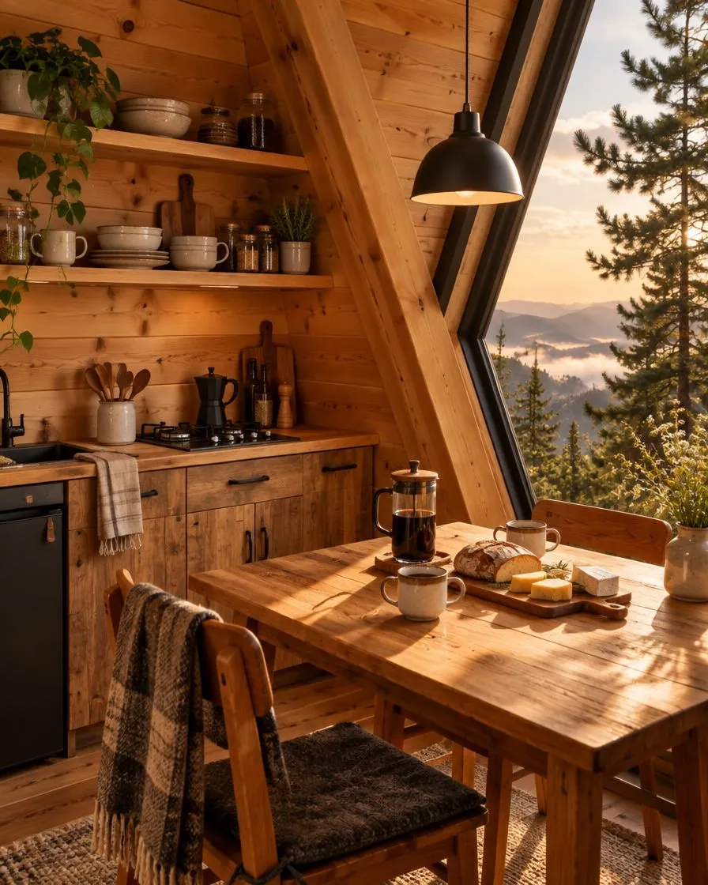
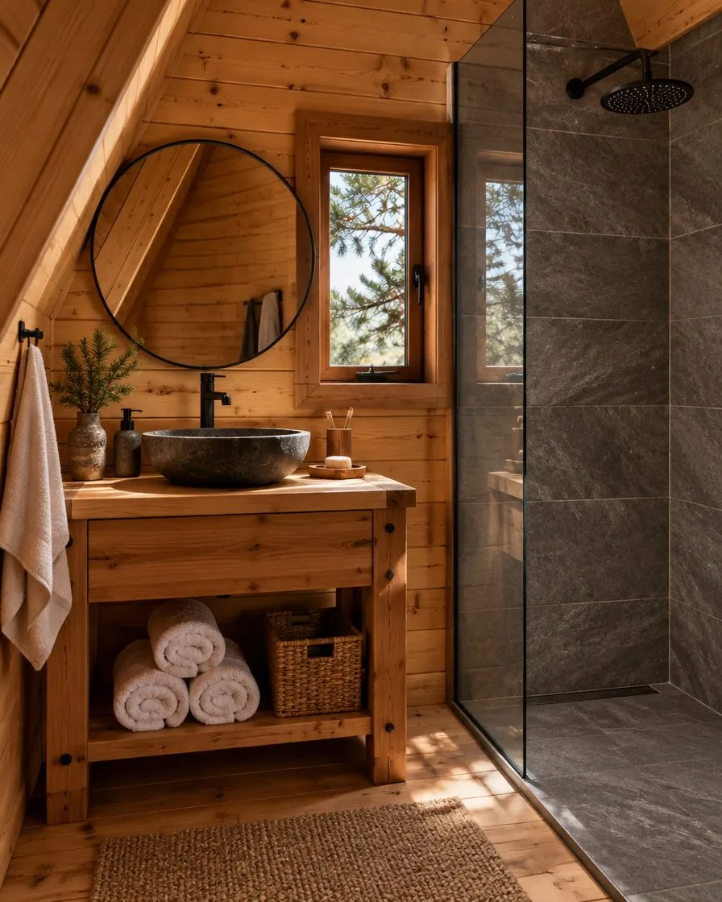
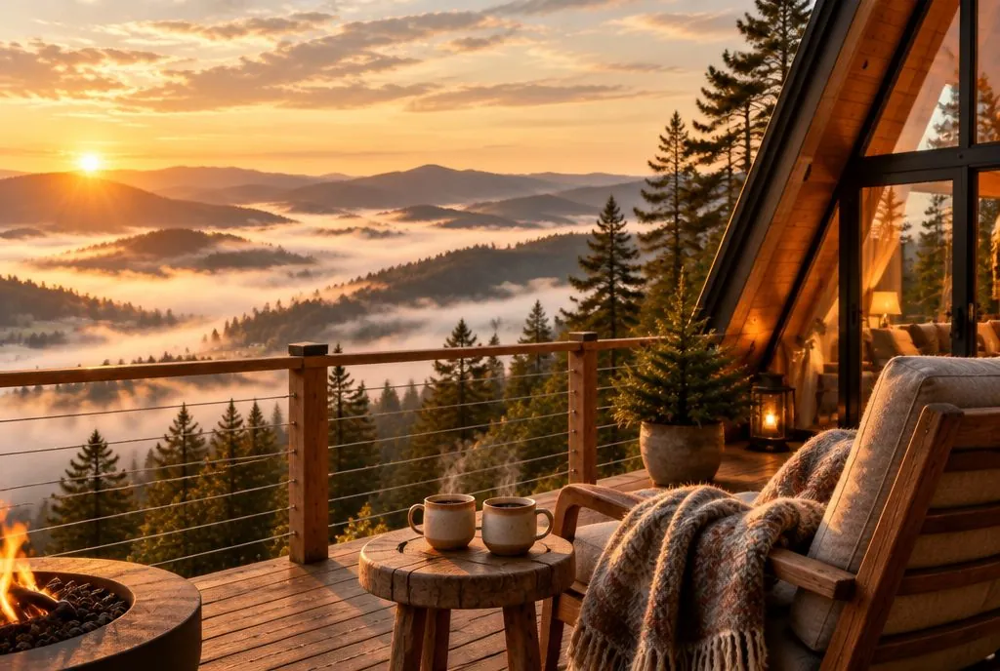

Plac sa starim borovima
Lofika stoji na padini iznad Zlatiborskog jezera, na placu koji je dugo bio samo livada i nekoliko starih borova. Zlatibor je ime dobio upravo po njima: kora im na suncu dobija zlatnu boju. Kućicu smo postavili tako da nijedan bor nije morao da bude posečen, pa se terasa danas pruža između dva najstarija.
Odatle se vidi cela dolina. Ujutru je ispod vas more magle, uveče svetla sela i jezera, a noću samo zvezde.
Zašto baš A-oblik
A-oblik je izabran zbog snega. Sa strmog krova sneg sam sklizne, i kad napada pola metra. Jedan stakleni zabat, visok šest metara, unosi dovoljno svetla da danju ne palite lampe, a navečer greje sobu poslednjim suncem.
Konstrukcija je od smrče, unutrašnjost je obložena borovim daskama koje još mirišu na smolu, a krov je od tamnog lima. Kamin je dovoljan da zagreje celu kućicu, a podno grejanje je tu za najhladnije noći.
Šta je gde
Dva nivoa ispod jednog krova i terasa okrenuta dolini.
- Stakleni zabatod poda do slemena, 6 m
- Galerija sa krevetomispod slemena, pogled kroz staklo
- Prizemljekamin, kuhinja, sto za dvoje, kupatilo
- Terasa od 18 m²đakuzi na drva i ognjište
Šta je unutra
U prizemlju su kamin, mala kuhinja sa ringlom i frižiderom, sto za dvoje uz prozor i kupatilo sa tušem i lavaboom od kamena. Drvene stepenice vode na galeriju ispod samog krova, gde je bračni krevet okrenut staklu. Ujutru vas budi sunce kroz staklo.
Nema televizora. Ima knjiga, društvenih igara, gramofona i dovoljno ćebadi za terasu.


Kuhinja i sto za dvoje uz prozor
Kupatilo sa tušem
Ko vas dočekuje
Mi živimo pet minuta niže, u selu. Dočekaćemo vas, pokazati kako se loži đakuzi i gde su drva, a onda vas ostaviti na miru. Za sve ostalo smo na telefonu, i danju i noću.
U frižideru vas čekaju sir, kajmak i pršuta sa domaćinstava iz okoline, a uz njih i spisak mesta gde ih možete kupiti za kući. Ako želite da istražite Zlatibor, rado ćemo vam preporučiti staze, vidikovce i kafane do kojih turisti retko stignu.
